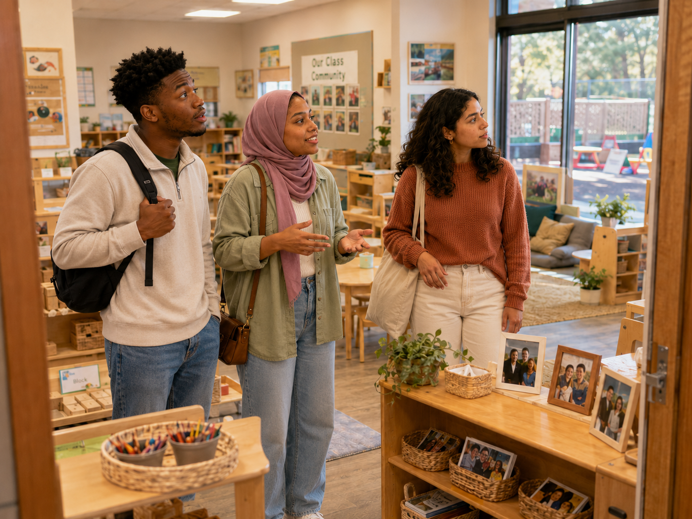

Environmental messages
👀 Read what the room communicates
Which feature most clearly tells children, “You are capable and trusted here”?
Designing environments for belonging, independence, play, and learning

Jordan: “I used to think classroom setup was mostly about making the room look nice.”
Aaliyah: “It does look nice—but the environment is doing more than that.”
Maya: “The shelves tell children what they can use. Labels support cleanup. The quiet area offers a place to regulate. The tables affect how children interact.”
Jordan: “So the room is kind of like another teacher?”
Aaliyah: “Exactly. A well-planned environment supports independence, safety, exploration, relationships, and learning.”
Maya: “And outdoors, children need places to run, climb, dig, wonder, pretend, and test what their bodies can do.”
Jordan: “The real question is: What is this space inviting children to become?”
Which feature most clearly tells children, “You are capable and trusted here”?
Choose the strongest design connection.
The block area sits in a narrow passage. Children carrying structures are repeatedly bumped. What is the strongest response?
Which art-area design best supports inquiry and creativity?
A child using a mobility device cannot reach several centers. What is the strongest first response?
Which change most authentically strengthens belonging?
Which outdoor plan offers the richest developmental possibilities?
Children must stop just as complex play begins each day. What is the strongest redesign?
Which sequence best represents intentional environmental planning?
Complete this sentence: A thoughtfully designed environment tells children…
Space, materials, and time shape children’s choices, relationships, mood, independence, play, and learning.
Did your response mention competence, trust, safety, access, identity, exploration, collaboration, movement, or regulation?
Teachers continually observe how children use indoor and outdoor environments, then remove barriers and expand possibilities.